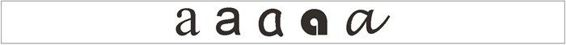
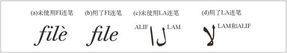
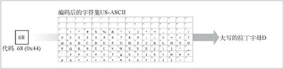

16.3 多语言字符编码入门
前一节描述了客户端和服务器是如何分别在 HTTP 的 Accept-Charset 首部和 Content-Type 首部的 charset 参数中携带字符编码信息的。对于工作中要开发大量国际化应用的 HTTP 程序员来说，为了能理解技术规范和相应的实现软件，需要深入地理解多语言字符系统。
由于术语很复杂且不一致，学习多语言字符系统不太容易。常常需要阅读标准文档，而且我们可能对工作涉及的那些语言还不太熟悉。本节是对字符系统及其标准的概览。如果读者对字符编码很熟悉，或者对这部分细节不感兴趣，可以直接跳到 16.4 节。
16.3.1 字符集术语
以下是应当了解的电子化字符系统的 8 个术语。
字符
字符是指字母、数字、标点、表意文字（比如汉语）、符号，或其他文本形式的 书写“原子”。由统一字符集（Universal Character Set，UCS，它的非正式的名字是 Unicode1）首创，为多种语言中的很多字符开发了一系列标准化的文本名称，它们常用来便捷地命名字符，而且不会与其他字符冲突。2
1 Unicode 是一个以 UCS 为基础而成立的商业化联合组织，致力推广商业产品。
2 字符的名称看起来类似 LATIN CAPITAL LETTER S 和 ARABIC LETTER QAF 的形式。
字形
描述字符的笔画图案或唯一的图形化形状。如果一个字符有多种不同的写法，就有多个字形（参见图 16-3）。

图 16-3 一个字符可以有很多不同的书写形式
编码后的字符
分配给字符的唯一数字编号，这样我们就可以操作它了。
代码空间
计划用于字符代码值的整数范围。
代码宽度
每个（固定大小的）字符代码所用的位数。
字符库
特定的工作字符集（全体字符的一个子集）。
编码后的字符集
组成字符库（从全球的字符中选出若干字符）的已编码字符集，并为每个字符分配代码空间中的一个代码。换句话说，它把数字化的字符代码映射为实际的字符。
字符编码方案
把数字化的字符代码编码成一系列二进制码（并能相应地反向解码）的算法。字符编码方案可用来减少识别字符所需要的数据总量（压缩）、解决传输限制、统一重叠编码字符集。
16.3.2 字符集的命名很糟糕
从技术上说，MIME 中的 charset 标记（用在 Content-Type 首部的 charset 参数中 和 Accept-Charset 首部中）描述的压根就不是字符集。MIME 中的 charset 值所命名的是把数据位映射为唯一的字符的一整套算法。它是字符编码方案（character encoding scheme）和编码后的字符集（coded character set）这两种概念的组合（参见图 16-2）。
因为关于字符编码方案和编码后的字符集方面的标准都已经发布过了，所以，这个术语的使用是很草率的，很容易引起混淆 3。下面是 HTTP/1.1 的作者们对于他们如何使用这些术语的介绍（在 RFC2616 中）。
3 更糟糕的是，MIME 中的 charset 标记经常会从特定的编码后字符集的名称或编码方案的名称里面选取。例如，iso-8859-1 是一个编码后字符集（它为一个包含 256 个欧洲字符的集合分配了数字化的代码），但 MIME 用 charset 值 iso-8859-1 来表示一种 8 位的、对编码后的字符集恒等的编码。这种不精确的术语并不是致命的问题，但在阅读标准文档的时候，需要对其假设用法保持清醒的头脑。
术语“字符集”在本文档中是指一种方法，它可以把一系列8位字节转换为一系列字符。注意：术语“字符集”经常被称为“字符编码”。但由于HTTP和MIME共享同样的注册信息，术语也能共享是很重要的。
IETF 在 RFC 2277 中也采用了非标准的术语。
本文档中使用术语“字符集”来表示一组把一系列 8 位字节转换为一系列字符的规则的集合，比如编码后的字符集与字符编码方案的组合。这与 MIME 的“charset=”参数中标识符的用法相同，并且已在 IANA 的字符集注册表中注册。（注意这不是在其他标准主体，比如在国际标准化组织 ISO 中使用的术语）。
因此，在阅读标准文档的时候，要保持清醒，这样才能确切地知道它所定义的到底是什么。现在我们已经将相关的术语介绍完了，接下来更仔细地研究一下字符、字形、字符集以及字符编码。
16.3.3 字符
字符是书写的最基本的构建单元。字符可以表示字母、数字、标点、表意符号（比如在汉语中）、数学符号，或其他书写的基本单元。
字符和字体以及风格无关。图 16-3 显示了同一个字符（UCS 中的命名是 LATIN SMALL LETTER A）的若干变体。尽管它们的笔画图案和风格有很大的不同，但母语是西欧语言的读者都能立刻辨认出这 5 个形状是同一个字符。
在很多书面语体系中，根据一个字符在单词中位置的不同，同一个字符也会有不同的笔画形状。例如，图 16-4 中的 4 种笔画都表示字符 ARABIC LETTER AIN。4 图 16-4a 显示了 AIN 作为一个单独的字符时是如何书写的。图 16-4d 显示的是 AIN 在单词开头时的情形。图 16-4c 显示了 AIN 在单词中间的情形，而图 16-4b 显示的是 AIN 在单词结尾处的情形。5
4 AIN 的读音有些像 ayine 的发音，但发音朝向喉咙后部。
5 注意，阿拉伯语的单词是从右向左书写的。
图 16-4 单个字符 ARABIC LETTER AIN 的 4 种与位置相关的书写形式
16.3.4 字形、连笔以及表示形式
不要把字符和字形混淆。字符是唯一的、抽象的语言“原子”。字形是画出每个字符时使用的特定方式。根据艺术形式和手法的不同，每个字符可以有很多不同的字形。6
6 很多人用术语“字形”来表示最终生成的位图图像，但从技术上说，字形是字符的内在形状，与字体和次要的艺术形式无关。进行这种区分不太容易，对我们的目的也没有什么用处。
同样，也不要把字符与表示形式混淆起来。为了让书法作品更好看，很多手写体和字体允许人们把相邻的字符漂亮地连写起来，称为连笔（ligatures），这样两个字符就平滑地连接在一起了。母语为英语的作者常把 F 和 I 结合为 FI 连笔（参见图 16-5a 和图 16-5b），而阿拉伯语的作者常把字符“LAM”和“ALIF”结合为一种很优雅的连笔（参见图 16-5c 和图 16-5d）。

图 16-5 连笔是相邻字符的另一种风格的表示形式，并非新的字符
这里给出一般的规则：如果用一种字形替代另一种的时候，文本的意思变了，那这些字形就是不同的字符。否则，它们就是同一个字符的不同风格的表示形式。7
7 语义和表示方式之间的区别并不总是很清晰的。为了实现的方便，已经为同一个字符的某些表示变体分配了不同的字符。不过我们还是尽量要避免这种做法。
16.3.5 编码后的字符集
根据 RFC 2277 和 2130 的定义，编码后的字符集把整数映射到字符。编码后的字符集经常用数组来实现 8，通过代码数值来索引（参见图16-6）。数组的元素就 是字符 9。
8 数组可以是多维的，这样代码数字中的不同二进制码就可以索引到数组的不同维。
9 图 16-6 使用了一个网格来表示编码后的字符集。网格中的每个元素都包含一个字符图像。这些图像应看作是符号，图像“D”是字符 LATIN CAPITAL LETTER D 的简称，而不是任何特定的图形化字形。

图 16-6 可以把编码后的字符集看作数组，把数值化的代码映射到字符
下面我们来看一些重要的编码后的字符集标准，包括具有历史意义的 US-ASCII 字符集、ASCII 的 iso-8859 扩展、日文的 JIS X 0201 字符集以及统一字符集（Universal Character Set，Unicode）。
US-ASCII:所有字符集的始祖
ASCII 是最著名的编码后字符集，早在 1968 年就由 ANSI 在标准 X3.4，“美国标准信息交换代码”（American Standard Code for Information Interchange）中进行了标准化。 ASCII 的代码值只是从 0 到 127，因此只需要 7 个二进制码就可以覆盖代码空间。ASCII 的推荐名称是 US-ASCII，这样可以和那些 7 位字符集的一些国际化变体区分开来。
HTTP 报文（首部、URI 等）使用的字符集是 US-ASCII。
iso-8859
iso-8859 字符集标准是 US-ASCII 的 8 位超集，使用二进制码的高位增加了一些国际化书面字符。由额外的二进制码提供的附加空间（多了 128 个代码）还不够大，甚至都不够所有的欧洲字符使用，更不用说亚洲字符了。因此 iso-8859 为不同地区定制了不同的字符集，如下所示。
iso-8859-1 西欧语言（例如，英语、法语）
iso-8859-2 中欧和东欧语言（例如，捷克、波兰）
iso-8859-3 南欧语言
iso-8859-4 北欧语言（例如，拉托维亚，立陶宛，格陵兰）
iso-8859-5 斯拉夫语（例如，保加利亚、俄罗斯、塞尔维亚）
iso-8859-6 阿拉伯语
iso-8859-7 希腊语
iso-8859-8 希伯来语
iso-8859-9 土耳其语
iso-8859-10 日耳曼和斯堪的纳维亚语言（例如，冰岛、因纽特）
iso-8859-15 对 iso-8859-1 的修改，包括了新的欧元字符
iso-8859-1 也称为 Latin1，是 HTML 的默认字符集。可以用它来表示大多数西欧语言的文本。因为 iso-8859-15 中包含了新的欧元符号，有过一些用它来代替 iso-8859-1 并作为 HTTP 默认编码后字符集的讨论。然而，由于 iso-8859-1 已经被广泛采用，要大范围地变更到 iso-8859-15 恐怕不是短时间内可以完成的。
JIS X 0201
JIS X 0201 是把 ASCII 扩展到日文半宽片假名字符的一个极小化的字符集。半宽片假名字符最早用在日文电报系统中。JIS X 0201 常常被称作 JIS Roman，JIS 是“Japanese Industrial Standard”（日文工业化标准）的缩写。
JIS X 0208与JIS X 0212
日文中包括数千个来自几个书面语系统中的字符。尽管可以（很痛苦地）勉强只使用 JIS X 0201 中的那 63 个基本的片假名字符，但实际使用中需要远比这个更完整的字符集。JIS X 0208 字符集是首个多字节日文字符集，它定义了 6879 个编码的字符，其中大多数是来源于中文的日本汉字。JIS X 0212 字符集又扩充了 6067 个字符。
UCS
UCS（Universal Character Set，统一字符集）是把全世界的所有字符整合到单一的编码后字符集的环球标准化成果。UCS 由 ISO 10646 定义。Unicode 是遵循 UCS 标准的商业化联合组织。UCS 具有能容纳百万以上字符的代码空间，不过基本集合只有大约 5 万个字符。
16.3.6 字符编码方案
字符编码方案规定如何把字符的代码数字打包装入内容比特，以及在另一端如何将其解包回字符代码（参见图 16-7）。字符编码方案有以下 3 种主要类型。
固定宽度
固定宽度方式的编码用固定数量的比特表示每个编码后的字符。它们能被快速处理，但可能会浪费空间。
可变宽度（无模态）
可变宽度方式的编码对不同的字符代码数字采用不同数量的比特。对于常用字符，这样可以减少需要的位数，而且还能在允许使用多字节来表示国际性字符的同时，保持对传统 8 位字符集的兼容性。
可变宽度（有模态）
有模态的编码使用特殊的“转义”模式在不同的模态之间切换。例如，可以用有模态的编码在文本中使用多个互相有重叠的字符集。有模态的编码处理起来比较复杂，但它们可以有效地支持复杂的书写系统。
图 16-7 字符编码方案把字符代码编码为比特，并负责反向变换
下面我们来看一些常见的编码方案。
8位
8 位固定宽度恒等编码把每个字符代码编码为相应的 8 位二进制值。它只能支持有 256 个字符代码范围的字符集。iso-8859 字符集家族系列使用的就是 8 位恒等编码。
UTF-8
UTF-8 是一种流行的为 UCS 设计的字符编码方案，UTF 表示 UCS 变换格式（UCS Transformation Format）。UTF-8 为字符代码值使用的是无模态的变宽编码，第一字节的高位表示编码后的字符所用的字节数，所需的每个后续字节都含有 6 位的代码 值（参见表 16-2）。
如果编码后的第 1 字节的最高位是 0，长度就是 1 字节，剩余的 7 位就包含字符的代码。这样带来的美妙结果就是和 ASCII 兼容（但和 iso-8859 系列不兼容，因为 iso-8859 系列使用了最高位）。
表16-2 UTF-8 变宽无模态编码
| 字符代码的二进制位 | 字节 1 | 字节 2 | 字节 3 | 字节 4 | 字节 5 | 字节 6 |
| 0-7 | 0ccccccc | - | - | - | - | - |
| 8-11 | 110ccccc | 10cccccc | - | - | - | - |
| 12-16 | 1110cccc | 10cccccc | 10cccccc | - | - | - |
| 17-21 | 11110ccc | 10cccccc | 10cccccc | 10cccccc | - | - |
| 22-26 | 111110cc | 10cccccc | 10cccccc | 10cccccc | 10cccccc | - |
| 27-31 | 1111110c | 10cccccc | 10cccccc | 10cccccc | 10cccccc | 10cccccc |
例如，字符代码 90（ASCII 的“Z”）会被编码为 1 个字节（01011010），而代码 5073（13 位二进制值为 1001111010001）会被编码为 3 个字节：
11100001 10001111 10010001
iso-2022-jp
iso-2022-jp 是互联网上的日文文档中广泛使用的编码。它是变宽、有模态的，所有值都不超过 128，以避免和不支持 8 位字符的软件出现兼容性问题。
编码上下文始终被设置为 4 种预设的字符集之一 10，使用特殊的“转义序列”（escape sequence）在字符集之间切换。iso-2022-jp 的初始状态使用 US-ASCII 字符集，使用 3 个字节的转义序列可以切换到 JIS X 0201（JIS-Roman）字符集或大得多的 JIS X 0208-1978 和 JIS X 0208-1983 字符集。
10 iso-2022-jp 编码和这 4 种字符集是紧密绑定的，而其他一些编码是和特定的字符集无关的。
表 16-3 中列出了这些转义序列。实际上，日文文本以 ESC $ @ 或 ESC $ B 开始，以 ESC ( B 或 ESC ( J 结束。
表16-3 iso-2022-jp的字符集切换转义序列
| 转义序列 | 转义后的字符集 | 每个代码的字节数 |
| ESC ( B | US-ASCII | 1 |
| ESC ( J | JIS X 0201-1976 (JIS Roman) | 1 |
| ESC $ @ | JIS X 0208-1978 | 2 |
| ESC $ B | JIS X 0208-1983 | 2 |
在 US-ASCII 或 JIS-Roman 模态下，每个字符使用单个字节。当使用更大的 JIS X 0208 系列的字符集时，每个字符代码使用 2 个字节。该编码把发送的字节的值域范围限制在 33~126 之间 11。
11 尽管每个字节只能有 94 个不同的值（33~126），这也足够覆盖 JIS X 0208 系列字符集里面的所有字符了，因为这些字符集是按照 94×94 的网格来组织代码值的，所以 2 个字节足以覆盖 JIS X 0208 字符集中的全部字符代码。
euc-jp
euc-jp 是另一种流行的日文编码。EUC 代表“Extended Unix Code”（扩展 Unix 代码），最早是为了在 Unix 操作系统上支持亚洲字符而开发的。
和 iso-2022-jp 类似，euc-jp 编码也是变长的，允许使用几种标准的日文字符集。但和 iso-2022-jp 不同的是，euc-jp 编码不是模态的。没有转义序列可以在不同模态之间切换。
euc-jp 支持 4 种编码后的字符集：JIS X 0201（JIS-Roman，对 ASCII 进行一些日文替换）、JIS X 0208、半宽片假名（最早在日文电报系统中使用的 63 个字符）以及 JIS X 0212。
编码 JIS Roman（它和 ASCII 兼容）的时候使用 1 个字节，对 JIS X 0208 和半宽片假名则使用 2 个字节，而对 JIS X 0212 使用 3 个字节。这种编码有点浪费空间但处理起来很简单。
表 16-4 概括了此编码的格局。
表16-4 euc-jp编码值
| 哪个字节 | 编 码 值 |
| JIS X 0201（有 94 个编码后的字符） | |
| 第 1 个字节 | 33~126 |
| JIS X 0208（有 6879 个编码后的字符） | |
| 第 1 个字节 | 161~254 |
| 第 2 个字节 | 161~254 |
| 半宽片假名（有 63 个编码后的字符） | |
| 第 1 个字节 | 142 |
| 第 2 个字节 | 161~223 |
| JIS X 0212（有 6067 个编码后的字符） | |
| 第 1 个字节 | 143 |
| 第 2 个字节 | 161~254 |
| 第 3 个字节 | 161~254 |
现在我们就介绍完了字符集和编码。下面一节将解释语言标记和 HTTP 如何使用语言标记把合适的内容传给受众。请参见附录 H，那里列出了详细的标准化字符集。